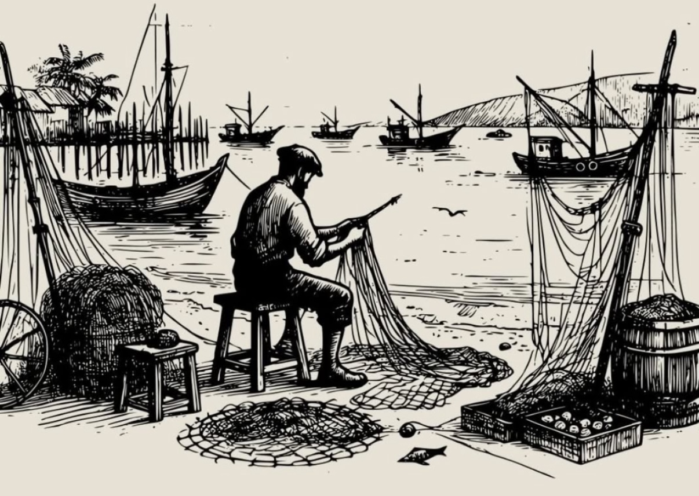

when fishermen cannot go to sea, they repair nets.
04 Jan, 2025
when the sea is too rough to sail, the smart ones don't wait— they get to work. they mend their nets, sharpen their tools, and prepare for the moment the storm breaks. because even in stillness, there's progress. it's not about sitting idle; it's about building what's next.